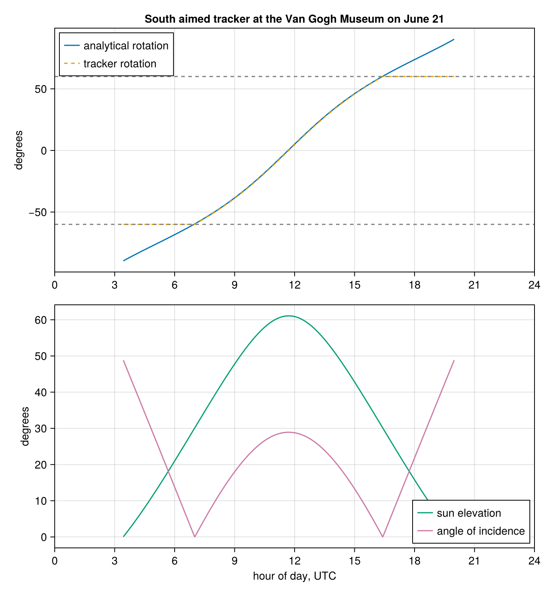

Numeric Precision
SolarPosition.jl computes at the precision of the Observer{T} element type. Construct the observer with the float type you want and every algorithm runs at that precision:
using SolarPosition
using Dates
dt = DateTime(2024, 6, 21, 12, 0, 0)
obs32 = Observer{Float32}(45.0, 10.0) # explicit precision
obs64 = Observer(45.0, 10.0) # Float64, the default
obsbig = Observer{BigFloat}(45.0, 10.0)
solar_position(obs32, dt).elevation # Float32 result67.08369f0The element type is taken from the arguments, so Observer(45.0f0, 10.0f0) also constructs an Observer{Float32}. The explicit Observer{T} form converts its arguments and avoids literal suffixes.
A magnitude-safe time base keeps full intra-day resolution at every precision. Time is carried as an exact integer day count since J2000 plus a fraction of a day, so low precision types never ride on the ~2.45e6 Julian Date.
Supported types
Float64is the default and the reference. Every algorithm agrees with a 256-bitBigFloatcomputation to about 1e-11 degrees.Float32trades a little accuracy for a modest speedup. The error stays within each algorithm's own claimed accuracy.Float128from Quadmath.jl gives quad precision of roughly 1e-30 degrees forPSA,SPA, andWalravenat a large runtime cost.BigFloatgives arbitrary precision. Raise it withsetprecision(BigFloat, bits). This is the right tool for generating reference values.Float16is not supported. The algorithm coefficients overflow its range and results areNaN.
Note that ΔT is only known to about a second and is therefore always evaluated in Float64, which bounds the achievable absolute accuracy regardless of T.
Accuracy and runtime
The table below lists the maximum error against a 256-bit BigFloat reference and the single-threaded runtime relative to Float64 for each algorithm. Errors were measured over a grid of 125 combinations of dates from 2015 to 2035 and latitudes from 70°N to 60°S, covering both elevation and azimuth.
| Algorithm | Float32 error | Float32 runtime | Float64 error | Float128 error | Float128 runtime | BigFloat runtime |
|---|---|---|---|---|---|---|
| PSA | 0.011° | 1.3× faster | 1.3e-11° | 7.1e-30° | 93× slower | 500× slower |
| NOAA | 0.0019° | 1.2× faster | 3.5e-12° | broken[1] | n/a | 330× slower |
| Walraven | 0.0040° | 1.3× faster | 6.4e-12° | 8.6e-30° | 74× slower | 400× slower |
| USNO | 0.0036° | 1.2× faster | 9.5e-12° | broken[1] | n/a | 300× slower |
| SPA | 0.012° | 1.5× faster | 1.8e-11° | 1.1e-29° | 118× slower | 330× slower |
Float128 is a fixed 113-bit significand type backed by libquadmath, is allocation free, and costs roughly 100× Float64. BigFloat is arbitrary precision backed by MPFR, allocates every intermediate result, and costs another 3× to 5× on top of Float128 at 256 bits.
Automatic differentiation
The element type is only constrained to Real, so dual numbers flow through every algorithm and solar positions are differentiable with ForwardDiff.jl. No extension package is needed. This gives exact derivatives of elevation or azimuth with respect to latitude, longitude, and altitude, which is useful for tracker and panel orientation optimization:
using ForwardDiff
grad = ForwardDiff.gradient(
x -> solar_position(Observer(x[1], x[2]), dt, SPA(), NoRefraction()).elevation,
[45.0, 10.0],
)2-element Vector{Float64}:
-0.9209770850903363
-0.2755706865807749Gradients also pass through refraction models, and nested duals give second derivatives. Time is a DateTime, not a number, so derivatives with respect to time are not available through this route. Differentiate through a wrapper that maps a number to a DateTime if you need them.
Example: optimizing a solar panel orientation
Gradient ascent on a plane-of-array irradiance proxy finds the best fixed tilt and azimuth for a site. The objective sums the cosine of the angle of incidence over one year of solar positions whenever the sun is up:
times = collect(DateTime(2024, 1, 1):Hour(1):DateTime(2024, 12, 31))
year = solar_position(obs64, times, PSA(), NoRefraction())
function annual_irradiance(angles)
tilt, panel_azimuth = angles
total = zero(eltype(angles))
for p in year
p.elevation > 0 || continue
cos_aoi = cosd(p.zenith) * cosd(tilt) +
sind(p.zenith) * sind(tilt) * cosd(p.azimuth - panel_azimuth)
total += max(zero(cos_aoi), cos_aoi)
end
return total
end
function optimize(x)
for _ in 1:100
g = ForwardDiff.gradient(annual_irradiance, x)
x = x + g / sqrt(sum(abs2, g))
end
return x
end
best = optimize([10.0, 150.0])
round.(best; digits = 1)2-element Vector{Float64}:
40.9
181.5The result lands near the textbook rule of thumb for the site at 45°N: tilt a little below the latitude, facing just about due south, and it collects roughly 31 % more annual irradiance than a flat panel.
Example: a horizontal single axis tracker
A horizontal single axis tracker rotates the panel about a horizontal axis to follow the sun east to west. The rotation angle is closed form, so the interesting free parameter is the azimuth of the axis itself, which field layouts do not always allow to be perfectly north to south. The rotation is limited to ±60°, a typical hardware range, and clamp differentiates fine:
function cos_aoi_tracked(p, axis_azimuth; limit = 60.0)
R = clamp(atand(tand(p.zenith) * sind(p.azimuth - axis_azimuth)), -limit, limit)
panel_azimuth = axis_azimuth + (R < 0 ? -90 : 90)
return cosd(p.zenith) * cosd(R) +
sind(p.zenith) * sind(abs(R)) * cosd(p.azimuth - panel_azimuth)
end
daylight = [p for p in year if p.elevation > 0]
tracked(axis) = sum(max(zero(axis), cos_aoi_tracked(p, axis)) for p in daylight)
function optimize_axis(x)
for i in 1:40
g = ForwardDiff.derivative(tracked, x)
x += g / abs(g) * max(0.1, 40.0 / (i + 10))
end
return x
end
axis = optimize_axis(150.0)
(axis = round(axis; digits = 1), gain_vs_fixed = round(tracked(axis) / annual_irradiance(best); digits = 3))(axis = 180.0, gain_vs_fixed = 1.383)The optimum is a true north to south axis, and the tracker collects roughly 38 % more annual irradiance than the best fixed panel from the previous example.
One day of operation makes the behaviour concrete. The site is the Van Gogh Museum in Amsterdam with the tracker axis aimed due south. Negative rotation faces the panel east. The upper panel compares the tracker rotation against the analytical rotation computed from first principles with only the solstice declination, the latitude, and the hour angle, ignoring the equation of time. The dashed curve lies exactly on the solid one until the ±60° limits cut it off. The lower panel shows the sun elevation and the angle of incidence between the panel normal and the sun. The angle of incidence touches zero exactly when the sun crosses due east and due west, because only then does the sun lie in the tracker's rotation plane, and its local maximum at noon equals the solar zenith angle because the panel is flat at that moment. At night all curves are left undefined:
using CairoMakie
vgm = Observer(52.35888, 4.88185; altitude = 100.0)
axis_south = 180.0
day = collect(DateTime(2024, 6, 21):Minute(1):DateTime(2024, 6, 21, 23, 59))
day_pos = solar_position(vgm, day, PSA(), NoRefraction())
hours = [Dates.value(t - day[1]) / 3_600_000 for t in day]
sunup = [p.elevation > 0 for p in day_pos]
rotation = [up ?
clamp(atand(tand(p.zenith) * sind(p.azimuth - axis_south)), -60.0, 60.0) : NaN
for (p, up) in zip(day_pos, sunup)]
elevation = [up ? p.elevation : NaN for (p, up) in zip(day_pos, sunup)]
aoi = [up ? acosd(clamp(cos_aoi_tracked(p, axis_south), -1, 1)) : NaN
for (p, up) in zip(day_pos, sunup)]
# unclamped rotation from declination, latitude, and hour angle alone
decl = 23.437
lat, lon = vgm.latitude, vgm.longitude
omega = [15 * (h - 12) + lon for h in hours]
analytical = [up ?
atand(cosd(decl) * sind(w), cosd(lat) * cosd(decl) * cosd(w) + sind(lat) * sind(decl)) : NaN
for (w, up) in zip(omega, sunup)]
fig = Figure(size = (700, 760))
ax1 = Axis(fig[1, 1]; ylabel = "degrees", xticks = 0:3:24,
title = "South aimed tracker at the Van Gogh Museum on June 21")
lines!(ax1, hours, analytical; label = "analytical rotation")
lines!(ax1, hours, rotation; linestyle = :dash, label = "tracker rotation")
hlines!(ax1, [-60, 60]; linestyle = :dash, color = :gray)
xlims!(ax1, 0, 24)
axislegend(ax1; position = :lt)
ax2 = Axis(fig[2, 1]; xlabel = "hour of day, UTC", ylabel = "degrees", xticks = 0:3:24)
lines!(ax2, hours, elevation; color = Makie.wong_colors()[3], label = "sun elevation")
lines!(ax2, hours, aoi; color = Makie.wong_colors()[4], label = "angle of incidence")
xlims!(ax2, 0, 24)
axislegend(ax2; position = :rb)
fig
Combining precision with multithreading
Precision and the OhMyThreads extension compose. Pass a scheduler as the last argument and the vectorized API parallelizes over timestamps at any precision:
using OhMyThreads
using Quadmath
obs = Observer{Float128}(45.0, 10.0)
times = collect(DateTime(2024, 6, 21):Minute(1):DateTime(2024, 6, 22))
positions = solar_position(obs, times, SPA(), NoRefraction(), DynamicScheduler())
positions[1]SolPos(azimuth=9.3811243509767160759440916938436216°, elevation=-21.011598932136595209954880892522944°, zenith=111.01159893213659520995488089252295°)Measured on 16 Julia threads on an 8-core AMD Ryzen 7 8845HS with DynamicScheduler():
| Algorithm | T | Serial | Threaded | Speedup |
|---|---|---|---|---|
| PSA | Float32 | 0.084 µs | 0.024 µs | 3.6× |
| PSA | Float64 | 0.114 µs | 0.045 µs | 2.5× |
| PSA | Float128 | 9.71 µs | 1.07 µs | 9.1× |
| SPA | Float32 | 1.35 µs | 0.21 µs | 6.5× |
| SPA | Float64 | 1.94 µs | 0.30 µs | 6.4× |
| SPA | Float128 | 226 µs | 29.7 µs | 7.6× |
Times are per timestamp. The scaling follows arithmetic intensity. PSA at machine precision is so cheap that writing the output array dominates, and memory bandwidth limits the speedup to about 3×. SPA does enough trigonometry per timestamp to keep all cores busy and reaches the ideal scaling for 8 physical cores. Float128 is pure software arithmetic and scales best of all, so threading recovers most of its cost: threaded Float128 SPA is only about 15× slower than serial Float64 SPA instead of 118×. Threading and reduced precision also compose in the other direction, since threaded Float32 SPA is 9.4× faster than serial Float64.
- 1Quadmath.jl v1.0.1 implements
remwith round-to-nearest instead of truncated semantics, which breaks the degree reduction in Base'ssindandcosd, soNOAAandUSNOgive wrong results atFloat128until that is fixed upstream.